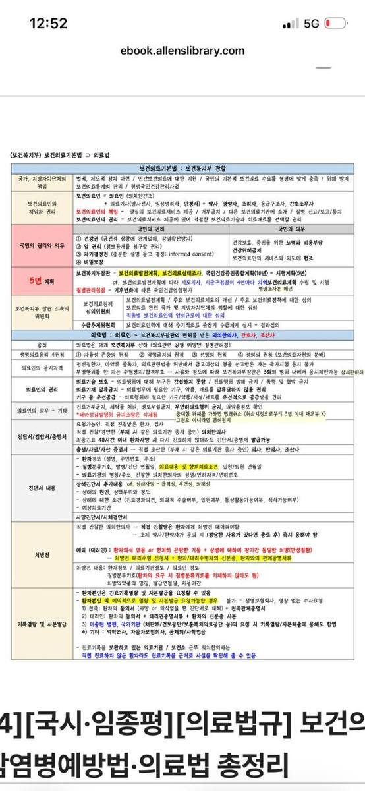

의료법규 사진 10장 → 국시 Pretest
분석 기준: 큰 제목/좌측 색 섹션/빨강·노랑·초록 강조를 먼저 source pack으로 분해한 뒤, 주체·숫자·예외 중심으로 카드화했습니다.
용량 설계: 원본 이미지를 HTML에 base64로 박지 않고 외부 asset으로 분리했습니다. 기본 화면은 텍스트 카드만 렌더링하고, 원본은 정답 확인 뒤 필요할 때만 엽니다.

분석 기준: 큰 제목/좌측 색 섹션/빨강·노랑·초록 강조를 먼저 source pack으로 분해한 뒤, 주체·숫자·예외 중심으로 카드화했습니다.
용량 설계: 원본 이미지를 HTML에 base64로 박지 않고 외부 asset으로 분리했습니다. 기본 화면은 텍스트 카드만 렌더링하고, 원본은 정답 확인 뒤 필요할 때만 엽니다.
